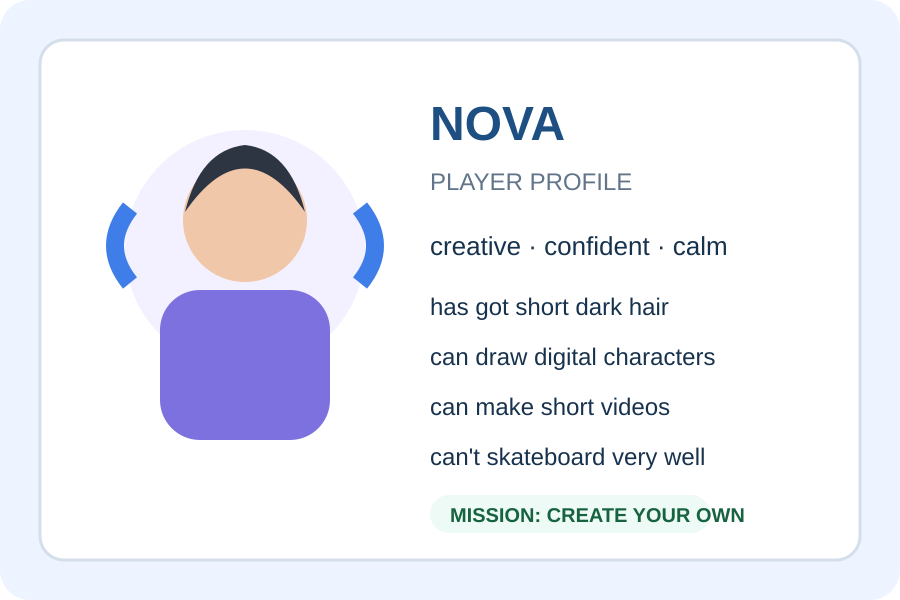

Create Your Character
Who are you in the AURA world?
1 · Quick Choice
Choose one from each column.
| Personality | Look | Skill |
|---|---|---|
| creative / brave / funny | short hair / glasses / headphones | draw / dance / play football |
Tell your partner: “My character is… / has got… / can…”
2 · Meet Nova

Read for gist:
Who is Nova? What is she like? What can she do?
Don't translate every word. Find the key information.
3 · Nova's profile
Nova is 14 and she is a creative, confident player. She has got short dark hair and bright blue headphones. She is usually calm, but she can be very funny with her friends. Nova can draw digital characters and she can make short videos. She can’t skateboard very well, but she wants to learn.
4 · Notice the Language
Which frame do we use for personality, appearance and ability?
5 · CORE 8
Choose 3 for your character.
6 · Build Your Player
Complete your Player Profile.
- Name + age
- 2–3 personality adjectives
- Appearance: 1–2 details
- One ability + one thing they can't do
- Favourite activity
7 · Pair Quest
Swap profiles. Ask and answer.
Bonus: Why do you like this character?
8 · Self Check
Before you finish:
- ☐ I used is.
- ☐ I used has got.
- ☐ I used can/can't.
- ☐ I used at least 2 personality adjectives.
- ☐ My sentences are easy to understand.
Upgrade one sentence with and, but or also.